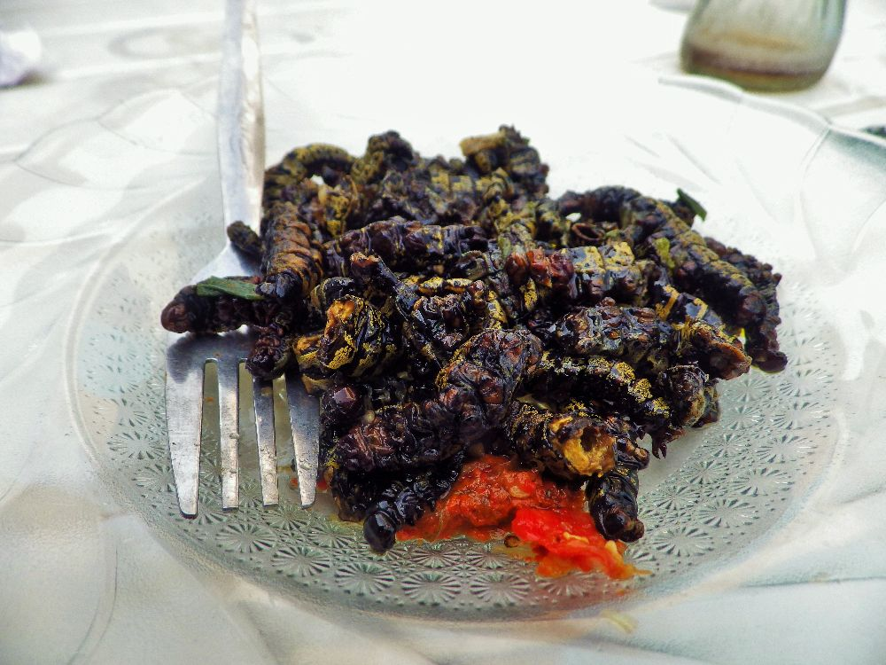

From the tree that they are found, Mbinzo are smoked directly. Hence why it is very IMPORTANT TO WASH IT THROUGHLY- at least 3 rinse with water. For best texture result, leave to soak overnight in cold water.
×
Oil is not all bad FAT!
Pour a tablespoon of vegetable oil (or oil to your preference) to your frying pan, let it heat for 2 minutes. Once hot, drain the water from your mbinzo then pour directly into the hot oil. stir, then all your seasoning (list below)
×
Is that it!? yummy
let your mbinzo steamer on low heat for 10 mins (time depends on whether your fulfill rich ingredient was soaked overnight. if not cook for longer till tender); then is ready to serve!
it should look like this( at least something like this!):

For some of us that text is a bit too 'wordy', CLICK for a visual compilation
MBINZO- simple
follow to reach your tatsebuds desire:
Step 1- WASH
Step 2- FRY
Step 3- EAT
×
Mbinzo are smoked!
From the tree that they are found, Mbinzo are smoked directly. Hence why it is very IMPORTANT TO WASH IT THROUGHLY- at least 3 rinse with water. For best texture result, leave to soak overnight in cold water.
×
Oil is not all bad FAT!
Pour a tablespoon of vegetable oil (or oil to your preference) to your frying pan, let it heat for 2 minutes. Once hot, drain the water from your mbinzo then pour directly into the hot oil. stir, then all your seasoning (list below)
×
Is that it!? yummy
let your mbinzo steamer on low heat for 10 mins (time depends on whether your fulfill rich ingredient was soaked overnight. if not cook for longer till tender); then is ready to serve!
For some of us that text is a bit too 'wordy', fo a visual compilation